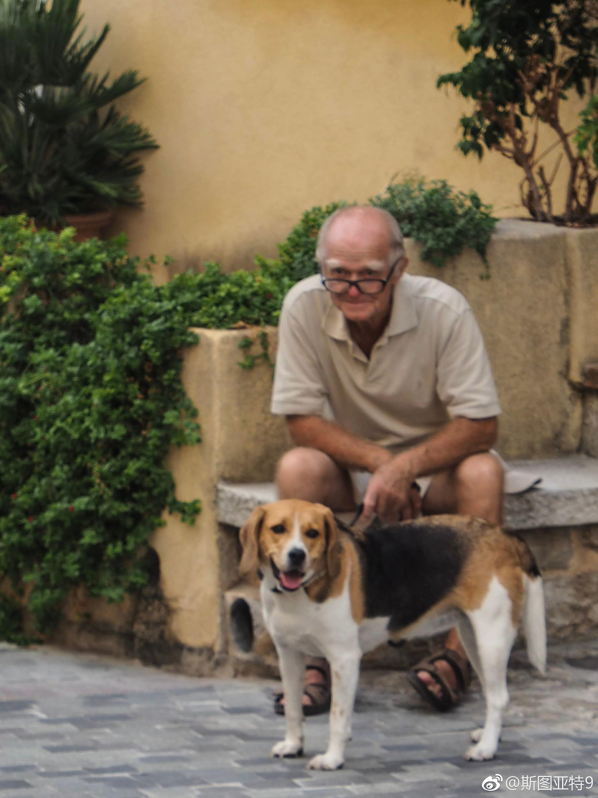

Antibes，算法国蓝色海岸（Côte D’Azur）上在三大景点（尼斯、摩纳哥、戛纳）外相对最大的景点了。但说起来有点鸡肋。老城区其实感觉不错，但并不很有特色。里面走来走去的全是游人。要P两张照片就只好选两张貌似悠闲的假装一下了。毕加索博物馆本来值得一看，但到了才发现正好在我们去法国这几天闭馆布展，很是扫兴。倒是非老城区的街道感觉不错，小广场正好有个老年合唱团在表演，氛围很欧洲。不过说起来虽然各方面感觉都很对，但都缺乏独特性。
彭斯的演讲秉承了特朗普受迫妄想的策略，描绘了一个中国到处欺负美国的形象，最后来了一句：我们对中国的侵略绝不屈服。这演讲到了微博，彻底迎合了中国秉承了媒体灌输风格的受迫妄想网民们，解读为美国要打冷战、全面封锁中国找舆论借口。真是天生一对！
看来评委们也没胆量给这样的争议人物。@斯图亚特9:这个世界我实在看不懂。一个退出巴黎协定、把领馆签到耶路撒冷、推出伊朗协议、中止接纳难民、退出联合国人权理事会的人，竟然获得诺贝尔和平奖的赔率有3.0？就因为和一个杀人无数的胖子见了个面，代价是给胖子提供安全保障并终止美韩联合军演？